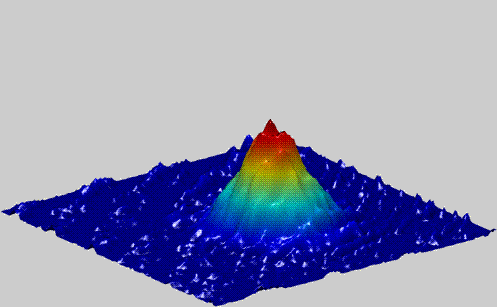

Artificial Intelligence

Experimental technology The experiment, developed by physicists from ANU, University of Adelaide and UNSW ADFA, created an extremely cold gas trapped in a laser beam, known as a Bose-Einstein condensate, replicating the experiment that won the 2001 Nobel Prize. "I didn't expect the machine could learn to do the experiment itself, from scratch, in under an hour," said co-lead researcher Paul Wigley from ANU Research School of Physics and Engineering. "A simple computer program would have taken longer than the age of the universe to run through all the combinations and work this out." Bose-Einstein condensates are some of the coldest places in the Universe, far colder than outer space, typically less than a billionth of a degree above absolute zero. They could be used for mineral exploration or navigation systems as they are extremely sensitive to external disturbances, which allows them to make very precise measurements such as tiny changes in the Earth's magnetic field or gravity. The artificial intelligence system's ability to set itself up quickly every morning and compensate for any overnight fluctuations would make this fragile technology much more useful for field measurements, said co-lead researcher Dr Michael Hush from UNSW ADFA. "You could make a working device to measure gravity that you could take in the back of a car, and the artificial intelligence would recalibrate and fix itself no matter what," he said. "It's cheaper than taking a physicist everywhere with you."

The Bose-Einstein method The team cooled the gas to around 1 microkelvin, and then handed control of the three laser beams over to the artificial intelligence to cool the trapped gas down to nanokelvin. Researchers were surprised by the methods the system came up with to ramp down the power of the lasers. "It did things a person wouldn't guess, such as changing one laser's power up and down, and compensating with another," said Mr Wigley. "It may be able to come up with complicated ways humans haven't thought of to get experiments colder and make measurements more precise. The new technique will lead to bigger and better experiments, said Dr Hush. "Next we plan to employ the artificial intelligence to build an even larger Bose-Einstein condensate faster than we've seen ever before," he said. The research is published in the Nature group journal Scientific Reports .
Media contacts: Gunnar Ahlbom
NASA Research Center, Moffett Field, Calif.
650-604-6982
Gahlbom@gmail.com
⛺ Popular this week
 Physics
Physics
 Space
Space

New bizzare state of matter
Physics
A new bizarre state of matter split fundamental particles.
Read more...Planet may contain life
Space
New exoplanet may contain integral parts for sustaining life.
Read more...⛺ Recently added


Artificial intelligence replaces physicists
Physicists are putting themselves out of a job, using artificial intelligence to run a complex experiment.
Read more...
Darkest material ever made
The substance 'Vantablack' may be the darkest material ever, absorbing up to 99.95% of all light.
Read more...
Quantum computing
The epitome of human engineering is at hand - Here's what you need to know.
Read more...